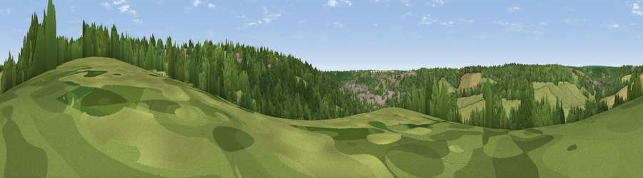

Viewpoint near Hughenden Valley
#43722 in England · top 80% of its area beats it · near Hughenden ValleyWhere it is
The exact computed spot (SU 86975 95125). Click the marker for map links.
The view, rendered

A 360° render of this exact spot computed from the terrain model, tree cover and land cover — summer colours, afternoon light, calibrated against photographs of famous viewpoints. Real trees, hedges and buildings will differ in detail.
The panorama
Grey silhouette: terrain skyline in each direction (720 bearings, Earth curvature and refraction included). Dashed green: skyline with trees (+15 m) and buildings (+8 m) as obstacles. Blue strip: how far the ground is visible on each bearing.
Where the view opens
Wedge length = distance to the farthest visible ground on that bearing (vegetation-aware). Rings at 10, 25 and 50 km.
What fills the view
47% woodland · 36% grassland · 11% built-up · 6% cropland
Angular shares of the visible panorama (visual magnitude), not map area. Landscape diversity 0.49 (0–1 Shannon).
Key numbers
More beautiful places nearby
The staircase of upgrades: each row has a higher view potential than everything closer. Driving times are estimates from straight-line distance, calibrated against real road routing — check an actual route before setting out.
| Place | Direction | Drive | Score |
|---|---|---|---|
| Viewpoint near Hughenden Valley | NNE · 1 km | ~3 min | 31.8 |
| Viewpoint near High Wycombe | S · 1 km | ~4 min | 32.2 |
| Viewpoint near Downley | WNW · 2 km | ~6 min | 49.2 |
| Viewpoint near Whiteleaf | NNW · 9 km | ~19 min | 58.2 |
| Brush Hill | NNW · 10 km | ~19 min | 67.9 |
| Viewpoint near Whiteleaf | NNW · 10 km | ~19 min | 70.1 |
| Beacon Hill | NNW · 11 km | ~22 min | 72.7 |
| Viewpoint near Chinnor | WNW · 12 km | ~22 min | 74.5 |
51.64820, -0.74432 · source: screening · position refined by local search. Computed location — check access rights before visiting.